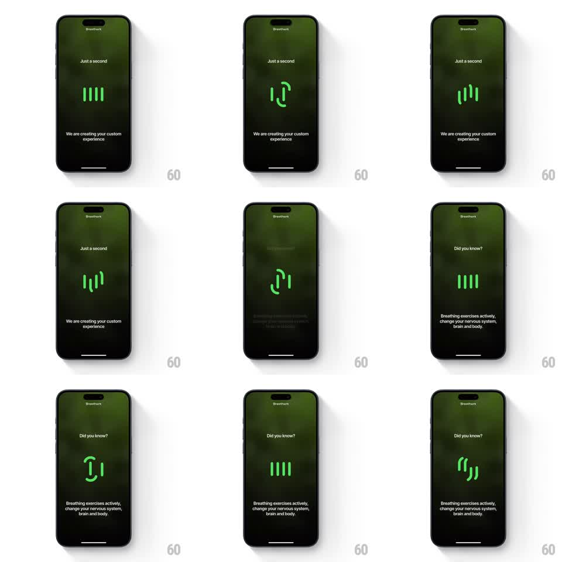

Media
Frame-by-frame

Rebuild this animation 1:1: Breathwrk's loading screen - four bright-green vertical bars that bend, bow, and rotate like breathing lungs, morphing between straight lines and curved arcs in a slow rhythm while copy cycles below.

Rebuild this animation 1:1: Breathwrk's loading screen - four bright-green vertical bars that bend, bow, and rotate like breathing lungs, morphing between straight lines and curved arcs in a slow rhythm while copy cycles below.
## Integration
Integration: stack-agnostic spec - springs given as stiffness/damping, timed motions as duration + curve; map every value to your framework and animation library of choice.
## Scene
Dark green gradient: "Breathwrk" wordmark top, "Just a second" label, four thick green rounded bars center, caption "We are creating your custom experience" bottom. Later: "Did you know?" with a fact ("Breathing exercises actively change your nervous system, brain and body.").
## Motion spec
Pattern: morphing bar loader (breathing rhythm).
- The four bars cycle: straight columns -> outer bars bow outward into arcs (like parentheses) -> inner pair pinches -> all rotate ~15deg -> back to straight, over a ~2.4s loop with 120ms phase offsets between bars.
- Morphs use path bending (the bars themselves curve), driven by a slow inhale-exhale easing (long ease-in, longer ease-out - a breath curve, not linear).
- Copy crossfades from "We are creating your custom experience" to "Did you know?" + fact at ~4s (300ms fade).
- Bars hold a soft glow; nothing else on screen moves.
## Calibration
- Phase offset is what makes it read as breathing - identical synchronized bars read as an equalizer.
- Loop is seamless: end state matches start state exactly.
## Reduced motion
Bars pulse opacity (0.5 -> 1, 1.2s) without bending.
## Don't miss
- Bars bend as paths - they are not straight bars being rotated.
- Green on dark green: the loader is the only bright element.